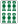
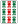

ORIJINAL HANDS 創作役 .
（27）ナゴヤ三色（サンシキ）
数牌３種類（万筒索）による３順子。
「なんだ、これは！ なんで こんなのが役になるんだ！」 などと云うなかれ(^-^；
たしかにイーペーコーなみに簡単、そこでイーペーコーと同じ一翻、メンゼンアガリでなければノー翻なのだ。
しかし このナゴヤ三色、考えようによっては、とっても有用。まったく役が無いような手でも、これさえあればオッケーだ。
リーチしたあと、 でも出たら死にたくなる。
そんなとき、もしナゴヤ三色を採用していれば、「人生 もう一度、ガンバッテみよう」と思う(^-^；
そうそう、大事なことを云い忘れていた。
ナゴヤ三色は、普通のサンシキ（三色同順）とは複合しない。そこででアガれば、タダのサンシキ。
どうしてもナゴヤ三色でアガりたければ、でアガれ（笑）
どうして「ナゴヤ三色というネーミングなのか？」って？
いや、ちょうど名古屋市内を走行中、渋滞に巻き込まれた。
どうしようもないのでハンドルに頭をつけて、ボーっとしていたとき、思いついた（笑）